청소년상담사-1급(1교시) (2021-10-09 기출문제)
1과목: 상담사 교육 및 사례지도
1. 학자와 수퍼비전의 정의가 옳게 연결된 것을 모두 고른 것은?
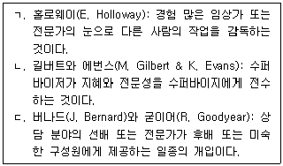
- ㄱ
- ㄴ
- ㄱ, ㄷ
- ㄴ, ㄷ
- ㄱ, ㄴ, ㄷ
(정답률: 알수없음)

2. 집단 수퍼비전의 장점으로 옳지 않은 것은?
- 수퍼바이지들을 위한 다양한 피드백이 제공된다.
- 상담의 여러 접근을 경험할 수 있는 기회가 된다.
- 수퍼바이지에게 자기인식을 현실검증하게 해준다.
- 수퍼바이지 각자에게 맞춤형 학습제공과 비밀보장이 된다.
- 수퍼바이지들 간에 이루어지는 대화를 통해 대화적 성찰이 이루어진다.
(정답률: 알수없음)
3. 수퍼바이저가 지도하고자 하는 상담 기법으로 옳은 것은?
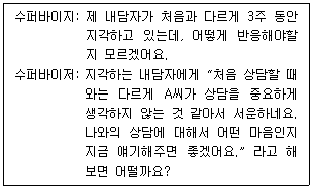
- 해석
- 즉시성
- 재진술
- 지지하기
- 설득하기
(정답률: 알수없음)
4. 버나드(J. Bernard)의 변별 모델에서 다음이 설명하는 수퍼비전의 초점은?
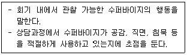
- 개입
- 개념화
- 개인화
- 해석화
- 맥락화
(정답률: 알수없음)
5. 수퍼비전 관련 기록에서 간접적인 방법으로 옳은 것을 모두 고른 것은?
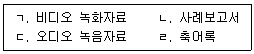
- ㄱ, ㄴ
- ㄴ, ㄹ
- ㄷ, ㄹ
- ㄱ, ㄷ, ㄹ
- ㄱ, ㄴ, ㄷ, ㄹ
(정답률: 알수없음)
6. 홀로웨이(E. Holloway)가 제시한 수퍼비전의 기능에 관한 설명으로 옳은 것은?
- 공유하기: 수퍼바이저는 공감적 관심과 격려를 통해 수퍼바이지를 지지한다.
- 가르치기: 수퍼바이저가 전문적 행동과 실제에서 롤모델이 된다.
- 점검하기: 수퍼바이저가 전문적 지식과 기술에 기반한 정보, 견해, 제안을 제공한다.
- 자문하기: 수퍼바이저가 수퍼바이지의 전문적 역할과 관련된 행동을 판단하고 평가한다.
- 모델링: 수퍼바이지의 정보와 견해를 바탕으로 문제해결을 촉진한다.
(정답률: 알수없음)
7. 델라니(D. Delaney)가 제안한 수퍼비전의 시작 단계에서 수퍼바이저와 수퍼바이지의 관계를 촉진할 수 있는 지침으로 옳지 않은 것은?
- 수퍼비전 과정에 대해 명료화한다.
- 수퍼바이저는 수퍼바이지의 불안에 민감해야 한다.
- 수퍼바이지와 수퍼바이저의 개인적 발달에 대해 평가한다.
- 개인 또는 집단 수퍼비전 접근의 차이점을 의논하고 결정한다.
- 수퍼바이저와 수퍼바이지는 수퍼비전에서 기대하는 바를 분명히 논의한다.
(정답률: 알수없음)
8. 힐, 찰스와 리드(C. Hill, D. Charles, & K. Reed)의 상담 학생 모델(counseling student model)에서 다음이 설명하는 단계와 주요 특징은?
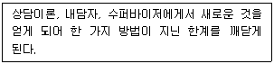
- 1단계 - 평가(feedback)
- 2단계 - 개인 특수성(person specific)
- 3단계 - 전환(transition)
- 4단계 - 상담자 입장(counselor stance)
- 5단계 - 개인적인 상담 양식 통합(integrated personal style)
(정답률: 알수없음)
9. 구조화된 집단 수퍼비전(SGS: structured group supervision) 모델의 단계를 순서대로 나열한 것은?
- 도움 요청 - 질문 - 토론 - 반응 - 피드백
- 도움 요청 - 토론 - 질문 - 반응 - 피드백
- 도움 요청 - 반응 - 피드백 - 질문 - 토론
- 도움 요청 - 질문 - 피드백 - 반응 - 토론
- 도움 요청 - 토론 - 피드백 - 질문 - 반응
(정답률: 알수없음)
10. 담화적 접근의 수퍼비전에 관한 설명으로 옳지 않은 것은?
- 경험에 의미를 부여하는 해석과정 자체에 초점을 둔다.
- 수퍼바이지가 내담자에게 가정법보다는 직설법으로 질문하도록 지도한다.
- 수퍼바이저는 자문가 역할과 언어 사용에 많은 관심을 기울인다.
- 수퍼바이저는 수퍼바이지와 내담자의 이야기를 편집하도록 돕는다.
- 수퍼바이지는 내담자들의 긍정적 변화를 위한 효과적인 방법을 찾도록 돕는다.
(정답률: 알수없음)
11. 해결중심 수퍼비전에 관한 설명으로 옳은 것을 모두 고른 것은?
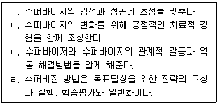
- ㄱ, ㄴ
- ㄷ, ㄹ
- ㄱ, ㄴ, ㄷ
- ㄴ, ㄷ, ㄹ
- ㄱ, ㄴ, ㄷ, ㄹ
(정답률: 알수없음)
12. 수퍼비전의 개입에 관한 설명으로 옳은 것을 모두 고른 것은?
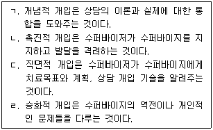
- ㄱ, ㄴ
- ㄷ, ㄹ
- ㄱ, ㄴ, ㄹ
- ㄴ, ㄷ, ㄹ
- ㄱ, ㄴ, ㄷ, ㄹ
(정답률: 알수없음)
13. 키치너(K. Kitchener)의 상담자 윤리원칙에 관한 설명으로 옳지 않은 것은?
- 자율성 존중(respect for autonomy): 개인의 자유와 존엄성에 대한 존중을 의미한다.
- 무해성(nonmaleficence): 내담자에게 해를 입힐 수 있는 행동은 피해야 한다.
- 선의(beneficence): 내담자에게 진정한 도움이 되도록 할 의무가 있다.
- 공정성(justice): 상담서비스를 다양한 배경의 사람들에게 차별 없이 제공해야 한다.
- 적정성(reasonableness): 상담자는 내담자의 이익과 안녕을 고려해야 한다.
(정답률: 알수없음)
14. 홀로웨이(E. Holloway)의 체계적 수퍼비전 모델에서 수퍼바이지의 맥락적 요인으로 옳은 것을 모두 고른 것은?
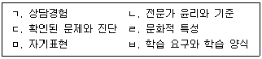
- ㄱ, ㄴ, ㄷ
- ㄱ, ㄹ, ㅁ, ㅂ
- ㄴ, ㄷ, ㄹ, ㅁ
- ㄱ, ㄷ, ㄹ, ㅁ, ㅂ
- ㄱ, ㄴ, ㄷ, ㄹ, ㅁ, ㅂ
(정답률: 알수없음)
15. 스톨튼버그(C. Stoltenberg)와 델워스(U. Delworth)의 통합발달모델에 관한 설명으로 옳지 않은 것은?
- 동기는 수퍼바이지가 임상적 훈련에 쏟는 노력을 의미한다.
- 수퍼바이지의 발달을 동기, 자율성, 자기-타인 인식 측면에서 수준별 특징으로 제시한다.
- 수준 1의 수퍼바이지는 불안이 높고 동기수준이 낮다.
- 수준 2의 수퍼바이지는 공감능력이 향상되어 자신에서 내담자로 초점을 맞추게 된다.
- 수준 3의 수퍼바이지는 상담에서 자기(self)를 사용한다.
(정답률: 알수없음)
16. 버나드(J. Bernard)의 변별 모델에서 제시한 수퍼바이저의 역할과 설명으로 옳은 것은?
- 평가자: 수퍼바이지의 발달수준과 과정을 구체적으로 평가한다.
- 촉진자: 특정 기법을 사용할 때 느낌을 이해하도록 촉진한다.
- 자문가: 상담전략과 개입에 대해 브레인스토밍 하도록 격려한다.
- 상담자: 회기 내 상호작용을 관찰하고 개입기술을 시범으로 보여준다.
- 교사: 수퍼바이지의 방어기제와 정서를 탐색하도록 한다.
(정답률: 알수없음)
17. 리네한(M. Linehan)이 제시한 수퍼비전에서 적용할 수 있는 절차로 옳은 것을 모두 고른 것은?
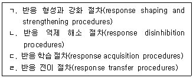
- ㄱ, ㄴ
- ㄷ, ㄹ
- ㄱ, ㄴ, ㄹ
- ㄴ, ㄷ, ㄹ
- ㄱ, ㄴ, ㄷ, ㄹ
(정답률: 알수없음)
18. 왓킨스(C. Watkins)가 제안한 수퍼바이저의 발달과정에서 직면하는 주요 문제로 옳지 않은 것은?
- 일치성 대 불일치성
- 유능함 대 무능함
- 자율성 대 의존성
- 정체성 확립 대 정체성 혼돈
- 자기인식 대 인식하지 못함
(정답률: 알수없음)
19. 스코볼트(T. Skovholt)와 로네스타드(M. Rønnestad)의 전생애 발달 모델에 관한 설명으로 옳은 것은?
- 초기 대학원 상태는 작업역할과 환경의 조화를 추구한다.
- 대학원 후기 상태는 경계를 넘어서는 경향이 있다.
- 초보 전문가 상태는 개인화되고 진정성 있는 접근법이 발달한다.
- 도우미 상태는 보수적이고 조심성을 보인다.
- 원로 전문가 상태는 현재의 상실에 대한 과제가 있다.
(정답률: 알수없음)
20. 수퍼비전의 피드백과 평가에 관한 설명으로 옳은 것을 모두 고른 것은?
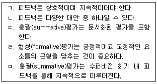
- ㄱ, ㄴ
- ㄷ, ㅁ
- ㄱ, ㄴ, ㄷ, ㄹ
- ㄴ, ㄷ, ㄹ, ㅁ
- ㄱ, ㄴ, ㄷ, ㄹ, ㅁ
(정답률: 알수없음)
21. 코리, 코리와 캘러넌(G. Corey, M. Corey, & P. Callanan)이 제안한 윤리적 의사결정과정의 순서로 옳은 것은?
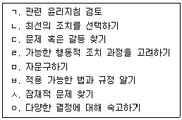
- ㄱ-ㄷ-ㅅ-ㅂ-ㄹ-ㅁ-ㄴ-ㅇ
- ㄷ-ㄱ-ㅂ-ㅅ-ㅁ-ㄹ-ㅇ-ㄴ
- ㅅ-ㄷ-ㅂ-ㅁ-ㄱ-ㄹ-ㄴ-ㅇ
- ㄷ-ㅅ-ㄱ-ㅂ-ㅁ-ㄹ-ㅇ-ㄴ
- ㄷ-ㄱ-ㅅ-ㅇ-ㅂ-ㄹ-ㄴ-ㅁ
(정답률: 알수없음)
22. 다음 사례에서 수퍼바이저가 수퍼바이지에게 알려주었어야 할 윤리지침은?
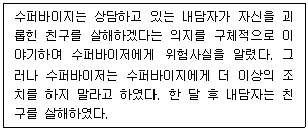
- 사전 동의
- 경고의 의무
- 이중 관계 금지
- 신분확인 의무
- 다양성 존중
(정답률: 알수없음)
23. 다음 사례에서 수퍼바이지의 개입에 관해 수퍼바이저가 확인해야 하는 내용으로 옳지 않은 것은?
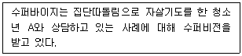
- 평정심을 유지하며 내담자에게 자살에 대해 직접적으로 질문했는가?
- 내담자의 관심사를 최소화하거나 위험에 가볍게 대처하지 않았는가?
- 고위험의 내담자를 혼자 있지 않도록 조치했는가?
- 주변에 연결할 수 있는 지지체계를 확인하였는가?
- 죽음에 대한 감상적 관념을 확대시켜 주었는가?
(정답률: 알수없음)
24. 여성주의 수퍼비전 모델에 관한 설명으로 옳지 않은 것은?
- 협력적인 관계를 추구한다.
- 권력과 불평등에 대해 분석한다.
- 다양성과 사회적 맥락을 고려한다.
- 진단기준 활용을 지향한다.
- 수퍼바이지의 역량강화를 위해 모델링을 사용한다.
(정답률: 알수없음)
25. 리트렐 등(J. Littrell et al.)이 제시한 수퍼바이저 발달모델에 관한 설명으로 옳은 것은?
- 1단계: 수퍼바이저는 자문가의 역할을 담당한다.
- 1단계: 수퍼바이지에게 자기 평가를 하도록 격려한다.
- 2단계: 수퍼바이저는 교사와 상담자의 역할을 습득한다.
- 3단계: 수퍼바이지는 수퍼바이저로부터 독립적으로 기능한다.
- 4단계: 회기를 구조화하는 책임이 수퍼바이지에게 넘어간다.
(정답률: 알수없음)
2과목: 청소년 관련 법과 행정
26. 학교 밖 청소년 지원에 관한 법령상 학교 밖 청소년 지원 위원회(이하 '지원위원회'로 한다.)의 구성에 관한 내용으로 옳지 않은 것은?
- 위원장은 여성가족부장관이다.
- 부위원장은 위원 중에서 호선(互選)한다.
- 여성가족부장관이 위촉하는 민간위원의 임기는 2년으로 한다.
- 위원장은 지원위원회를 대표하고 지원위원회의 업무를 총괄한다.
- 간사는 여성가족부 소속 공무원 중에서 여성가족부장관이 지명한다.
(정답률: 알수없음)
27. 청소년 기본법 제6조에 관한 내용이다. ( )에 들어갈 내용으로 옳은 것은?
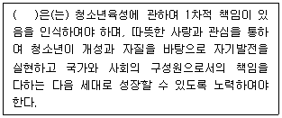
- 가정
- 학교
- 국가
- 사회
- 지방자치단체
(정답률: 알수없음)
28. 아동ㆍ청소년의 성보호에 관한 법률상 폭행 또는 협박으로 아동ㆍ청소년을 강간할 목적으로 예비 또는 음모한 사람에 대해 명시된 처벌 기준은?
- 1년 이하의 징역
- 2년 이하의 징역
- 3년 이하의 징역
- 4년 이하의 징역
- 5년 이하의 징역
(정답률: 알수없음)
29. 아동ㆍ청소년의 성보호에 관한 법률상 명시된 내용이다. ( )에 들어갈 내용으로 옳은 것은?
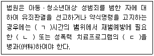
- ㄱ: 100, ㄴ: 사회봉사, ㄷ: 수강명령
- ㄱ: 300, ㄴ: 사회봉사, ㄷ: 이수명령
- ㄱ: 300, ㄴ: 이수명령, ㄷ: 수강명령
- ㄱ: 500, ㄴ: 사회봉사, ㄷ: 수강명령
- ㄱ: 500, ㄴ: 수강명령, ㄷ: 이수명령
(정답률: 알수없음)
30. 학교폭력예방 및 대책에 관한 법률상 명시된 교육감의 임무로 옳지 않은 것은?
- 학교폭력 실태조사를 연 2회 이상 실시하고 그 결과를 공표하여야 한다.
- 학교폭력대책지역위원회의 장으로 하여금 학교폭력의 예방 및 대책에 관한 실시계획을 수립ㆍ시행하도록 하여야 한다.
- 학교폭력 등에 관한 조사, 상담, 치유프로그램 운영 등을 위한 전문기관을 설치ㆍ운영할 수 있다.
- 관할 구역에서 학교폭력의 예방 및 대책 마련에 기여한 바가 큰 학교 또는 소속 교원에게 상훈을 수여할 수 있다.
- 시ㆍ도교육청에 학교폭력의 예방과 대책을 담당하는 전담부서를 설치ㆍ운영하여야 한다.
(정답률: 알수없음)
31. 청소년활동 진흥법상 명시된 정의로서 ( )에 들어갈 내용으로 옳은 것은?
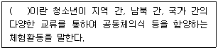
- 청소년수련활동
- 청소년교류활동
- 청소년문화활동
- 청소년동아리활동
- 청소년자원봉사활동
(정답률: 알수없음)
32. 청소년복지 지원법상 위기청소년 특별지원에 관한 내용으로 옳지 않은 것은?
- 대상 청소년의 선정 기준과 범위는 대통령령으로 정한다.
- 청소년 본인은 특별지원을 신청할 수 없기 때문에 법적 보호자가 신청해야 한다.
- 특별자치시장ㆍ특별자치도지사 또는 시장ㆍ군수ㆍ구청장은 긴급하게 지원할 필요가 있다고 판단하는 경우에는 청소년복지심의위원회의 심의를 거치지 아니하고 결정할 수 있다.
- 생활지원, 학업지원, 의료지원, 직업훈련지원, 청소년활동지원 등 물품 또는 서비스의 형태로 제공한다.
- 위기청소년을 위해 반드시 필요하다고 인정되는 경우 금전의 형태로 제공할 수 있다.
(정답률: 알수없음)
33. 학교 밖 청소년 지원에 관한 법률상 명시된 내용이다. ( )에 들어갈 숫자는?
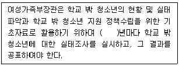
- 1
- 2
- 3
- 4
- 5
(정답률: 알수없음)
34. 청소년 기본법상 청소년 근로자에 대한 최저임금법, 근로기준법 등 노동 관계법령 위반 사실을 알게 된 경우, 고용노동부장관이나 근로감독관에게 의무적으로 신고해야 할 기관이 아닌 것은?
- 한국청소년수련시설협회
- 이주배경청소년지원센터
- 학교 밖 청소년 지원센터
- 아동복지시설
- 한국청소년상담복지개발원
(정답률: 알수없음)
35. 청소년 기본법령상 청소년상담사의 배치기준이 옳지 않은 것은?
- 청소년쉼터: 1명 이상
- 청소년자립지원관: 1명 이상
- 청소년치료재활센터: 1명 이상
- 시ㆍ군ㆍ구에 설치된 청소년상담복지센터: 2명 이상
- 특별시ㆍ광역시ㆍ도 및 특별자치도에 설치된 청소년상담복지센터: 3명 이상
(정답률: 알수없음)
36. 아동ㆍ청소년의 성보호에 관한 법률상 아동ㆍ청소년대상 성폭력범죄자의 신상정보를 공개하도록 제공되는 등록정보를 모두 고른 것은?
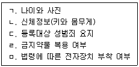
- ㄱ, ㄴ
- ㄷ, ㄹ
- ㄴ, ㄷ, ㄹ
- ㄱ, ㄴ, ㄷ, ㅁ
- ㄱ, ㄴ, ㄷ, ㄹ, ㅁ
(정답률: 알수없음)
37. ( )에 들어갈 청소년 연령으로 옳은 것은?
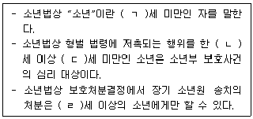
- ㄱ: 18, ㄴ: 9, ㄷ: 14, ㄹ: 14
- ㄱ: 18, ㄴ: 9, ㄷ: 15, ㄹ: 14
- ㄱ: 19, ㄴ: 9, ㄷ: 14, ㄹ: 14
- ㄱ: 19, ㄴ: 10, ㄷ: 14, ㄹ: 12
- ㄱ: 19, ㄴ: 10, ㄷ: 15, ㄹ: 12
(정답률: 알수없음)
38. 청소년 보호법상 청소년 보호에 관한 내용으로 옳지 않은 것은?
- 청소년보호종합대책의 수립ㆍ시행과 점검회의의 운영 등에 필요한 사항은 여성가족부장관령으로 정한다.
- 여성가족부장관은 청소년의 유해환경에 대한 접촉실태 조사를 정기적으로 실시하여야 한다.
- 청소년보호위원회는 청소년유해매체물, 청소년유해약물등, 청소년유해업소 등의 심의ㆍ결정 등에 관한 사항을 심의한다.
- 여성가족부장관은 3년마다 관계 중앙행정기관의 장 및 지방자치단체의 장과 협의하여 청소년을 보호하기 위한 종합대책을 수립ㆍ시행하여야 한다.
- 인터넷게임의 제공자는 회원으로 가입하려는 사람이 16세 미만의 청소년일 경우에는 친권자 등의 동의를 받아야 한다.
(정답률: 알수없음)
39. 청소년 보호법령상 환각물질 중독자로 판명된 청소년에 대하여 치료와 재활을 받도록 지원할 수 있다. 다음 밑줄 친 대상자에 해당되는 자는?
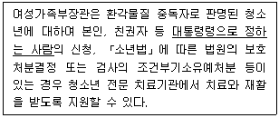
- 교사
- 미성년후견인
- 청소년상담사
- 청소년지도사
- 사회복지사
(정답률: 알수없음)
40. 소년법상 명시된 동행영장에 적어야 하는 사항으로 옳은 것을 모두 고른 것은?
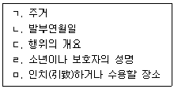
- ㄱ, ㄴ
- ㄱ, ㄷ, ㄹ
- ㄴ, ㄹ, ㅁ
- ㄴ, ㄷ, ㄹ, ㅁ
- ㄱ, ㄴ, ㄷ, ㄹ, ㅁ
(정답률: 알수없음)
41. 청소년 기본법상 청소년육성기금에 관한 설명으로 옳지 않은 것은?
- 기금은 여성가족부장관이 관리ㆍ운용한다.
- 청소년지도자의 양성을 위한 지원에 사용한다.
- 기금 조성 사업을 위한 지원에는 사용할 수 없다.
- 기금의 운용으로 생기는 수익금을 재원으로 조성한다.
- 시ㆍ도지사는 관할구역의 청소년육성을 위한 사업 지원에 필요한 재원을 확보하기 위하여 지방청소년육성기금을 설치할 수 있다.
(정답률: 알수없음)
42. 청소년상담복지센터에 관한 설명으로 옳지 않은 것은?
- 시장ㆍ군수ㆍ구청장은 청소년상담복지센터를 청소년단체에 위탁하여 운영하도록 할 수 있다.
- 청소년상담복지센터는 청소년과 부모에 대한 상담ㆍ복지지원 등의 기능을 수행한다.
- 시ㆍ군ㆍ구에 설치하는 청소년상담복지센터는 시ㆍ군ㆍ구에 설치하는 지방청소년활동진흥센터와 통합하여 운영할 수 없다.
- 청소년상담복지센터는 상담 자원봉사자와 청소년지도자에 대한 교육 및 연수를 수행한다.
- 시장ㆍ군수ㆍ구청장은 청소년상담복지센터를 법인으로 설치할 수 있다.
(정답률: 알수없음)
43. 학교 밖 청소년 지원에 관한 법률상 학교 밖 청소년이 아닌 자는?
- 초등학교를 입학한 후 3개월 이상 결석한 청소년
- 중학교 과정의 취학을 유예한 청소년
- 방송통신고등학교로 전학한 지 3개월이 초과된 청소년
- 고등학교에서 퇴학처분을 받은 지 3개월이 초과된 청소년
- 고등학교에서 자퇴한 지 2개월이 초과된 청소년
(정답률: 알수없음)
44. 여성가족부 청소년가족정책실의 조직과 기능이 옳은 것은?
- 청소년정책과: 한국청소년상담복지개발원의 지도ㆍ감독
- 청소년활동진흥과: 청소년의 사회진출 및 취업ㆍ창업 지원에 관한 사항
- 청소년자립지원과: 청소년치료재활센터의 운영에 관한 사항
- 학교밖청소년지원과: 특별지원대상 청소년에 대한 지원계획의 수립 및 시행
- 청소년보호환경과: 위기 청소년을 위한 사회안전망 구축을 위한 종합대책의 수립ㆍ조정
(정답률: 알수없음)
45. 학교 밖 청소년 지원에 관한 법률상 학교 밖 청소년 지원센터의 업무에 해당되지 않는 것은?
- 학교 밖 청소년 지원을 위한 지역사회 자원의 발굴 및 연계ㆍ협력
- 학교 밖 청소년 지원 프로그램의 개발 및 보급
- 학교 밖 청소년 지원에 필요한 프로그램에 대한 정보제공 및 홍보
- 학교 밖 청소년에 대한 개인정보를 연계기관에 제공
- 지역사회 청소년통합지원체계를 구성하는 기관과 연계 및 협력
(정답률: 알수없음)
46. 청소년복지 지원법상 한국청소년상담복지개발원의 정관에 포함되어야 하는 사항을 모두 고른 것은?
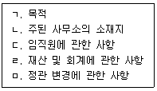
- ㄱ, ㄴ
- ㄱ, ㄹ
- ㄴ, ㄷ, ㄹ
- ㄱ, ㄴ, ㄷ, ㄹ
- ㄱ, ㄴ, ㄷ, ㄹ, ㅁ
(정답률: 알수없음)
47. 청소년활동 진흥법상 한국청소년활동진흥원의 감사를 임명하는 자는?
- 국무총리
- 교육부장관
- 여성가족부장관
- 기획재정부장관
- 행정안전부장관
(정답률: 알수없음)
48. 청소년활동 진흥법령상 명시된 청소년수련시설의 운영대표자가 될 수 없는 자는?
- 1급 청소년지도사 자격증 소지자
- 2급 청소년지도사 자격증 취득 후 청소년육성업무에 3년 이상 종사한 사람
- 3급 청소년지도사 자격증 취득 후 청소년육성업무에 5년 이상 종사한 사람
- 「초ㆍ중등교육법」제21조에 따른 정교사 자격증 소지자 중 청소년육성업무에 5년 이상 종사한 사람
- 청소년육성업무에 7년 이상 종사한 사람
(정답률: 알수없음)
49. 청소년 보호법상 청소년 전문 치료기관의 장과 그 종사자 또는 그 직에 있었던 사람 중 직무상 알게 된 비밀을 누설한 자에 대한 명시된 처벌기준은?
- 300만원 이하의 벌금
- 500만원 이하의 벌금
- 500만원 이하의 과태료
- 1년 이하의 징역 또는 1천만원 이하의 벌금
- 2년 이하의 징역 또는 2천만원 이하의 벌금
(정답률: 알수없음)
50. 청소년 기본법상 명시된 내용이다. ( )에 들어갈 내용으로 옳은 것은?
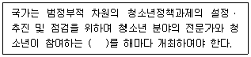
- 지방청소년육성위원회
- 청소년참여위원회
- 청소년특별회의
- 청소년정책위원회
- 청소년보호위원회
(정답률: 알수없음)
3과목: 상담연구방법론의 실제
51. 연구윤리에 관한 설명으로 옳지 않은 것은?
- 연구자 본인의 이전 저작물을 일부 인용할 경우, 출처를 표시하지 않아도 된다.
- 무기명의 기록자료(archival data)를 사용할 경우 동의서를 받는 것을 생략할 수 있다.
- 참여자가 미성년자일 경우, 연구자는 보호자에게서도 미성년자의 연구참여에 관한 동의를 구해야 한다.
- 연구자는 자료 수집 전에 연구 참여로 인한 이득과 위험을 연구참여자에게 알려야 한다.
- 연구자는 자료수집 전에 중도철회의 권리를 참여자에게 알려야 한다.
(정답률: 알수없음)
52. 상담 연구 분야에서의 과학적 활동에 관한 설명으로 옳지 않은 것은?
- 이론에 기초한 연구를 수행하는 것을 강조한다.
- 상담 효과에 관한 객관적인 연구결과를 상담 현장에 활용할 것을 강조한다.
- '과학자-실무자 모형'은 실무지향적 활동뿐만 아니라 연구과제 수행과 같은 과학적 활동을 강조한다.
- 실증주의 패러다임을 따르는 연구자는 연구 대상에 영향을 주지도 영향을 받지도 않는다.
- 구성주의 패러다임을 따르는 연구자는 수집한 자료가 자신의 예측과 부합하는지를 검증한다.
(정답률: 알수없음)
53. 솔로몬 4집단설계에 관한 설명으로 옳지 않은 것은?
- 실험집단1과 통제집단2의 비교를 통해 처치 이전의 사전검사 영향 가능성을 배제할 수 있다.
- 통제집단 사전-사후측정설계와 통제집단 사후측정설계를 통합한 형태이다.
- 설계의 복잡성으로 인해 시간과 비용의 문제가 발생한다.
- 두 번째 실험집단은 사전검사 여부를 제외하면 첫 번째 실험집단과 동일한 조건이다.
- 실험처치와 사전검사 간의 상호작용 통제에 효과적이다.
(정답률: 알수없음)
54. 다음 사례에서 발생 가능한 내적 타당도 위협요인은?
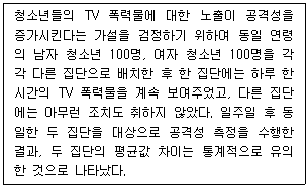
- 실험대상의 성숙
- 실험대상의 탈락
- 표본선택의 편향
- 사전검사의 영향
- 통계적 회귀
(정답률: 알수없음)
55. 4가지 상담기법의 효과 차이 검정을 위하여 4개의 집단에 고등학생을 100명씩 무선배치한 후, 각 집단에 한 가지 특정 상담기법을 활용하였다. 분산분석 결과가 다음과 같을 때 옳지 않은 것은? (단, 모든 계산 수치는 소수점 첫째자리에서 반올림한다.)
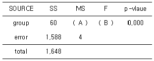
- 집단 간 제곱합의 자유도는 3이다.
- 집단 내 제곱합의 자유도는 396이다.
- A는 20이다.
- B는 5이다.
- 분석결과는 4가지 상담기법의 효과가 각각 다름을 보여주고 있다.
(정답률: 알수없음)
56. 상관분석에 관한 설명으로 옳지 않은 것은?
- 두 변수의 값에 음의 상수를 곱하면 두 변수 간의 상관은 감소한다.
- 상관계수는 -1에서 +1의 값을 가진다.
- 상관계수의 절댓값이 0.8 이상이면 강한 상관관계이다.
- 상관계수의 절댓값 크기는 두 변수 간 선형적 관계의 강도를 나타낸다.
- 산포도에서 한 변수의 값이 증가함에 따라 다른 변수의 값이 감소할 경우 음의 상관관계이다.
(정답률: 알수없음)
57. 다음 자료를 이용하여 추정회귀식
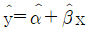
를 구하고자 한다(N = 100). 최소제곱법에 의한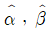
값으로 옳은 것은?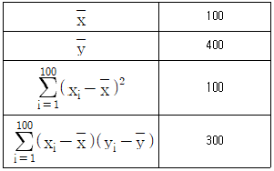
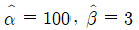
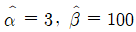
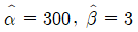
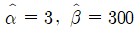
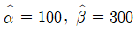
(정답률: 알수없음)
58. 척도에 관한 설명으로 옳지 않은 것은?
- 명목척도는 연구대상을 상호배타적으로 분류한다.
- 등간척도를 이용하여 표준편차와 상관계수를 구할 수 있다.
- 서열척도는 측정하고자 하는 특성의 대상별 차이 정도에 수치를 부여한다.
- 비율척도에서 0은 측정하고자 하는 특성이 '존재하지 않음'을 의미한다.
- 등간척도는 점수들의 차이와 서열관계를 측정할 수 있다.
(정답률: 알수없음)
59. 다음 사례에 나타난 표본추출기법에 관한 설명으로 옳은 것은?
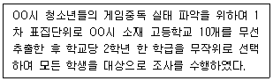
- 내적으로 동질적이고 외적으로 이질적인 범주들로 구분한다.
- 비확률표본추출기법에 해당한다.
- 모집단의 구성요소들이 집락화되어 있을 경우 유용하다.
- 표집틀을 확보하고 있지 못한 상황에 유용하다.
- 모집단을 구성하는 모든 개별요소들에 고유번호가 필요하다.
(정답률: 알수없음)
60. Cronbach의 α에 관한 설명으로 옳은 것을 모두 고른 것은?
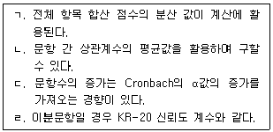
- ㄱ
- ㄴ
- ㄱ, ㄴ
- ㄴ, ㄷ, ㄹ
- ㄱ, ㄴ, ㄷ, ㄹ
(정답률: 알수없음)
61. 다음 실험설계에 관한 설명으로 옳지 않은 것은?
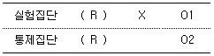
- 통제집단 사후측정설계이다.
- 독립변수의 효과는 O1과 O2의 차이이다.
- 시험효과는 발생하지 않는다.
- 두 집단의 최초 상태 동질성을 확보할 수 있다.
- 실험집단의 경우 외생변수의 영향을 배제할 수 있다.
(정답률: 알수없음)
62. 변수 간 관계에 관한 설명으로 옳지 않은 것은?
- 매개변수는 독립변수의 영향을 종속변수로 전달한다.
- 독립변수와 종속변수 간의 비허위적 관계는 두 변수 간 인과관계 성립의 필요조건이다.
- 조절변수는 종속변수와 무관하게 독립변수에 영향을 미친다.
- 종속변수가 상수일 경우 독립변수와의 인과관계는 불가능하다.
- 독립변수와 종속변수 간의 시간적 선후관계는 두 변수 간 인과관계 성립의 필요조건이다.
(정답률: 알수없음)
63. 가설검정에 관한 설명으로 옳은 것은?
- 표본의 크기가 작아질수록, 통계적 검정력은 커진다.
- 측정도구의 신뢰도와 통계적 검정력은 무관하다.
- 2종 오류는 영가설이 참일 때 표본결과에 의해 영가설을 채택할 때 발생한다.
- 연구자가 설정한 1종 오류의 확률은 참인 영가설을 기각할 위험의 허용가능한 수준을 의미한다.
- 유의수준은 1종 오류 확률과 2종 오류 확률 간의 차이를 의미한다.
(정답률: 알수없음)
64. 각각의 연구방법이 옳게 연결된 것은?
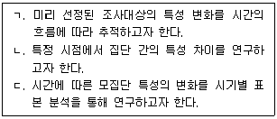
- ㄱ: 패널연구, ㄴ: 추세연구, ㄷ: 횡단연구
- ㄱ: 패널연구, ㄴ: 횡단연구, ㄷ: 추세연구
- ㄱ: 추세연구, ㄴ: 횡단연구, ㄷ: 패널연구
- ㄱ: 코호트연구, ㄴ: 패널연구, ㄷ: 횡단연구
- ㄱ: 코호트연구, ㄴ: 횡단연구, ㄷ: 패널연구
(정답률: 알수없음)
65. 회귀분석 시 결정계수 R2에 관한 설명으로 옳은 것을 모두 고른 것은?
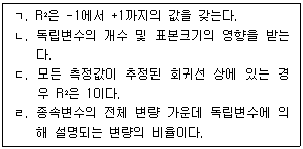
- ㄱ
- ㄴ
- ㄱ, ㄴ
- ㄴ, ㄷ, ㄹ
- ㄱ, ㄴ, ㄷ, ㄹ
(정답률: 알수없음)
66. 저작권에 관한 연구윤리로 옳지 않은 것은?
- 윤리 원칙 중 정의의 원칙, 진실성의 원칙과 관련이 있다.
- 연구자는 자신이 실제로 기여한 연구에 대해서만 저자로서의 자격을 가질 수 있다.
- 연구자가 여럿일 경우 연구책임자가 저자 여부 및 저자 순서를 결정한다.
- 편집 등 보조적인 업무를 담당한 사람의 경우 그 사실을 논문의 도입 부분 각주에 보고한다.
- 박사학위 논문을 요약해서 지도교수와 함께 학술지에 투고할 경우 학위취득자가 제1저자가 된다.
(정답률: 알수없음)
67. 통계적 검정력에 관한 설명으로 옳은 것을 모두 고른 것은?
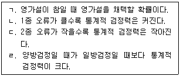
- ㄱ
- ㄴ
- ㄱ, ㄴ
- ㄷ, ㄹ
- ㄴ, ㄷ, ㄹ
(정답률: 알수없음)
68. 질적 연구방법에 관한 설명으로 옳은 것을 모두 고른 것은?
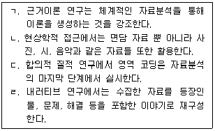
- ㄱ, ㄴ
- ㄴ, ㄷ
- ㄷ, ㄹ
- ㄱ, ㄴ, ㄹ
- ㄱ, ㄷ, ㄹ
(정답률: 알수없음)
69. 조작적 정의에 관한 설명으로 옳은 것을 모두 고른 것은?
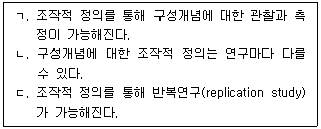
- ㄱ
- ㄴ
- ㄱ, ㄷ
- ㄴ, ㄷ
- ㄱ, ㄴ, ㄷ
(정답률: 알수없음)
70. 조절효과를 확인하기 위한 연구문제로 적절한 것은?
- 상담수퍼바이저가 갖춰야 할 직무역량은 무엇인가?
- 수퍼비전은 초보상담사의 상담효능감에 영향을 미치는가?
- 인지적 기법과 행동적 기법은 청소년내담자의 우울 감소에 차별적인 영향을 미치는가?
- 성찰적 수퍼비전이 상담사의 수퍼비전 만족도에 미치는 영향은 상담사의 상담경력에 따라 다른가?
- 부모의 역기능적 양육태도는 아동의 사회적 관계욕구 충족에 영향을 미치고, 아동의 사회적 관계욕구 충족은 아동의 자해행동에 영향을 미치는가?
(정답률: 알수없음)
71. 척도 개발 및 타당화와 관련된 설명으로 옳은 것을 모두 고른 것은?
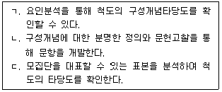
- ㄴ
- ㄷ
- ㄱ, ㄴ
- ㄴ, ㄷ
- ㄱ, ㄴ, ㄷ
(정답률: 알수없음)
72. 선행 연구를 토대로 연구자가 설정한 전체 구조모형이 수집한 자료와 합치하는지(model fit)를 평가하는 통계치가 아닌 것은?
- χ2
- χ2/df
- RMR(root mean square residual)
- C.R.(critical ratio)
- RMSEA(root mean square error of approximation)
(정답률: 알수없음)
73. 논문 작성에 관한 설명으로 옳은 것을 모두 고른 것은?
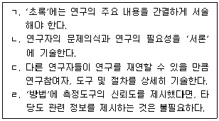
- ㄱ, ㄹ
- ㄱ, ㄴ, ㄷ
- ㄱ, ㄴ, ㄹ
- ㄴ, ㄷ, ㄹ
- ㄱ, ㄴ, ㄷ, ㄹ
(정답률: 알수없음)
74. 다음 내용이 모두 해당되는 현상은?
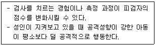
- 순서효과(order effect)
- 반응성(reactivity)
- 이월효과(carryover effect)
- 처치의 확산(treatment diffusion)
- 단일조작 편향(mono-operation bias)
(정답률: 알수없음)
75. 양적 연구 시 연구가설에 관한 설명으로 옳지 않은 것은?
- 변수 간에 기대되는 관계를 검증 가능한 형태로 서술한다.
- 이론적 분포를 바탕으로 통계적 가설을 검증한다.
- 관련 이론과 선행연구를 토대로 기술한 확정적인 진술이다.
- 하나의 가설은 하나의 관계만을 검증하도록 진술하는 것이 바람직하다.
- 일반적으로 등호를 포함한 등가설 또는 부등호를 포함한 부등가설의 형태로 기술한다.
(정답률: 알수없음)